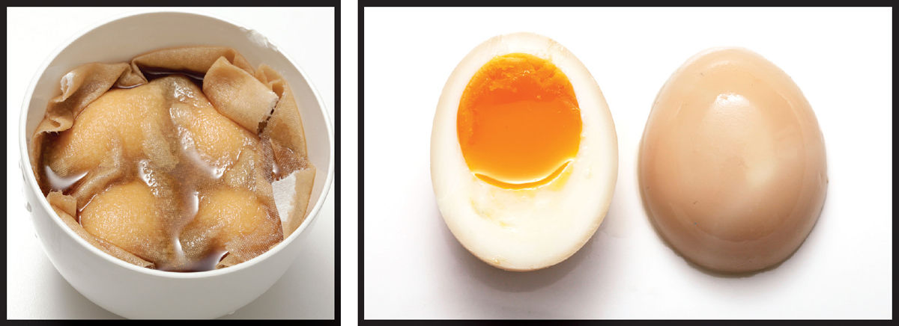
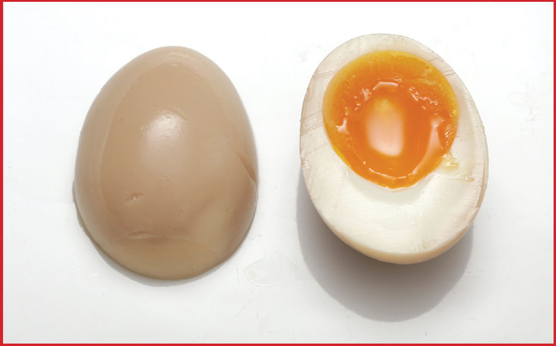

AJITSUKE TAMAGO
|
Yield Makes 6 eggs |
Active Time 5 minutes, plus time to boil the eggs if starting from raw Total Time 4 to 12 hours |
INGREDIENTS
1 cup (240 ml) water
1 cup (240 ml) sake
½ cup (120 ml) soy sauce
½ cup (120 ml) mirin
½ cup (100 g) sugar
6 soft- or medium-boiled eggs, peeled (here)
Ajitsuke tamago (Japanese for “flavored eggs”) are boiled eggs that are marinated in a mixture of sake, soy sauce, mirin, and sugar until the exteriors are lightly dyed brown and the eggs pick up a sweet and savory flavor. They’re a common addition to bowls of ramen, but they’re also delicious on their own and a recipe worth keeping under your belt.
Now, you could just pour your marinade into a bowl and add your eggs. That’ll work. Sort of. The problem is that hard-boiled eggs are more buoyant than the sweet-salty marinade and thus float to the top and poke their heads out, resulting in uneven marination. One common solution for this is to put the eggs and the marinade into a plastic zipper-lock bag and carefully remove all the air from it, forcing the liquid to spread around the eggs. It works, but it’s a little messy to do. A much easier technique is to simply cover the tops of the marinating eggs with a paper towel.
The towel wicks liquid up and around the eggs, making sure that all sides get even exposure to marinade. It’s a technique I use all the time for all kinds of preparations—keeping vegetables submerged in their pickling liquid, for example, or keeping peeled artichokes submerged in lemon water to prevent discoloration.
DIRECTIONS
1 Combine the water, sake, soy, mirin, and sugar in a medium bowl and whisk until the sugar is dissolved.
2 Place the eggs in a bowl that just barely fits them all. Pour the marinade on top until the eggs are covered or just floating. Place a double layer of paper towels on top and press down until completely saturated in liquid to help keep the eggs submerged and marinating evenly. Refrigerate for at least 4 hours and up to 12. Discard the marinade after 12 hours. Store the eggs in a sealed container in the fridge for up to 3 days. Serve cold or reheat by boiling for a couple of minutes in water or in noodle soup broth.

The Limits of Marination
When I was in college and living in a house shared by fifty people, I remember getting an email once from a resident offering free chicken breasts to whoever wanted them. His claim: “they’ve been marinating for three whole days, so they’re going to be super tender and tasty as f*&k.”
I don’t know any college student who’d turn down free food, so I took them, grilled them, and served them to some friends for dinner. The consensus? They were awful. Mushy and mealy with a chalky texture that was completely offputting. The lesson I learned that day? With marinades, longer does not necessarily equal better. Marinades can be great for seasoning the outer layers of a food, but letting your food sit in a marinade for too long can wreak chemical havoc on its texture.
With acidic marinades—like the Italian-style dressing those chicken breasts had been marinated in—denaturation of proteins can cause foods to turn mushy and rapidly give up their moisture when heated.
With ajitsuke tamago, there’s another culprit: salt.
We all know that salt can have a powerful effect on food, right? In the case of bacon or ham, for instance, salt not only draws moisture out from the interior of the food; it also dissolves some of the proteins in the muscle, causing it to tighten and change in texture (ever notice how different bacon feels from fresh pork belly?).
So it is with ajitsuke tamago. A few hours in a marinade and you’ll get an egg with a delightfully sweet and salty flavor on its outer layer. The flavor is powerful enough to season the whole bite, despite the fact that it’s only penetrated a millimeter or two. Let the egg sit in that salty marinade for too long, however, and you’ll see the marinade slowly work its way into the center of the egg. Eventually it’ll even reach the yolk, causing it to firm up and set into an almost fudge-like texture. Not what we’re after.
Pictured is an egg that I marinated for three whole days before slicing in half.
As you can see, nearly all of the yolk has been hardened (a small amount of liquid remains in the very center—give it another day or two, and it would have been hard all the way through). Eating this egg is also quite unpleasant. The white is hard, dry, and extremely rubbery, and the parts of the yolk that have been cured are hard set, sticky, and chewy in a manner most unpleasant. This process is taken to the extreme to make the infamous Chinese thousand-year-old eggs, in which raw duck eggs are buried in a salty mixture of tea ashes until cured all the way through to the center. The resultant eggs are as hard as a hard-boiled eggs but have never seen heat.
